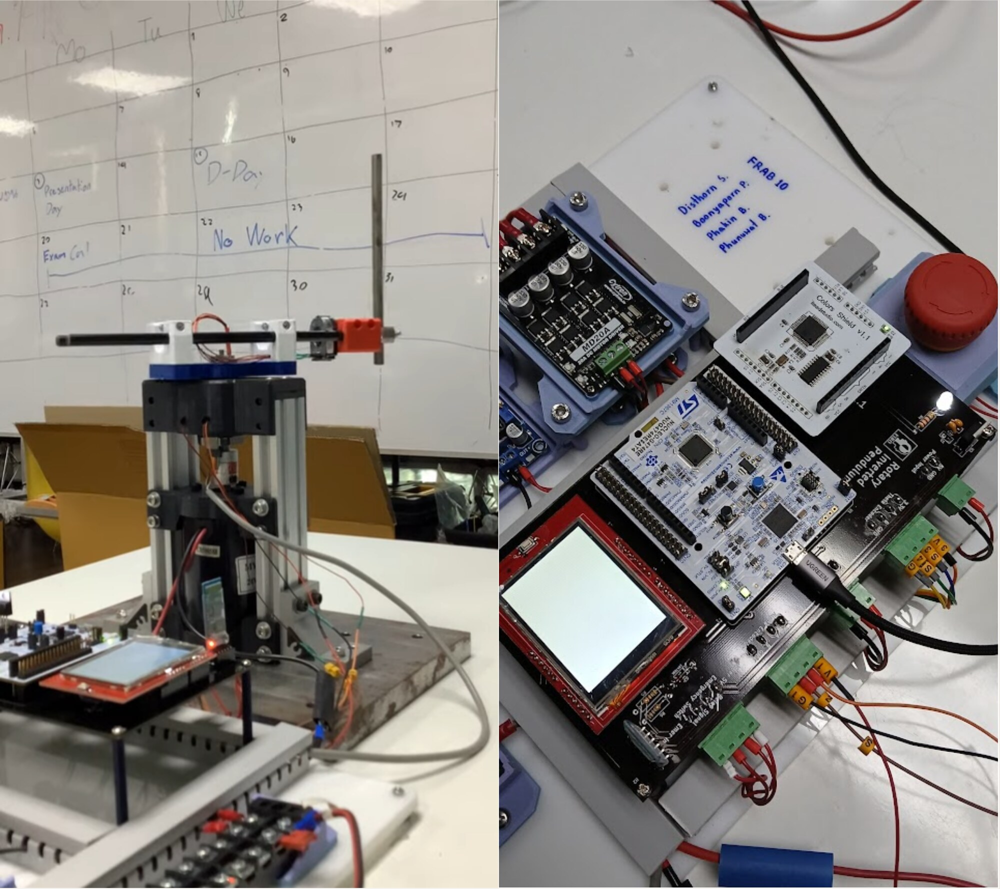
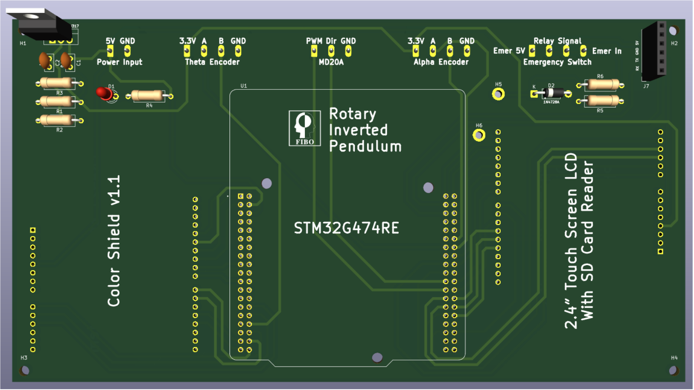
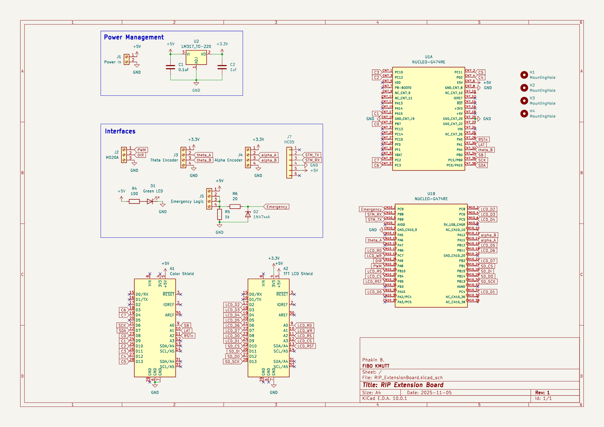
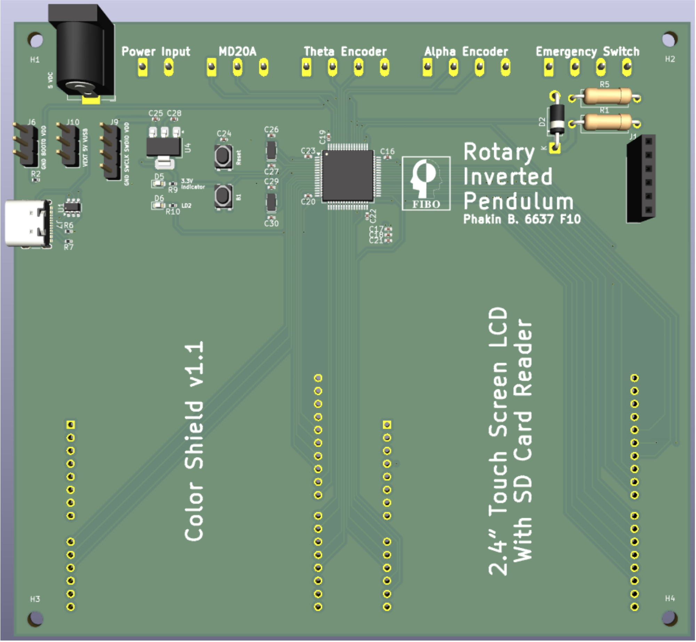
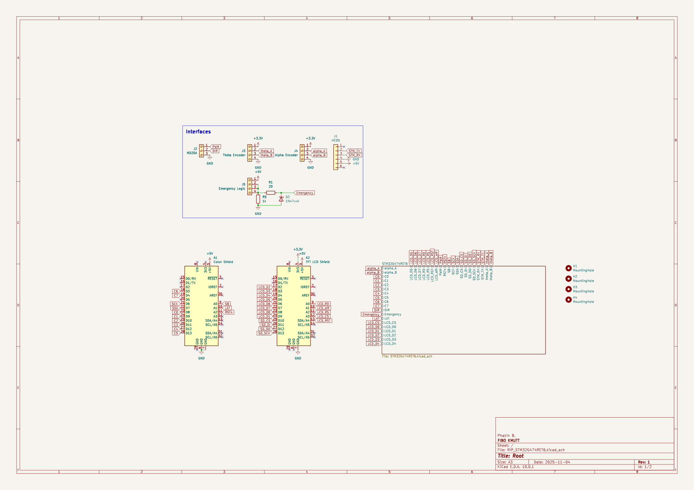
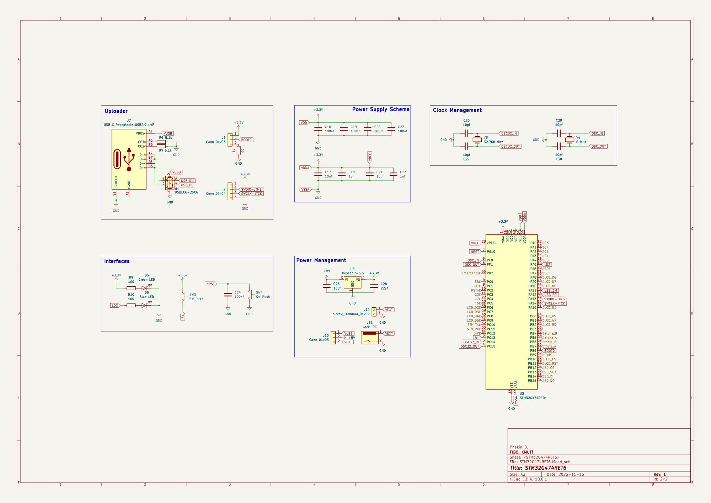

About the project
A rotary inverted pendulum that swings itself up from hanging down and then balances upright, on a custom embedded board.
The rotary inverted pendulum is a classic control benchmark because it is nonlinear, underactuated, and unstable. One motor drives a free-swinging link, so lifting and balancing need two different controllers and a safe hand-over between them.
Linear control cannot handle the large swing-up motion. An energy-based controller first raises the pendulum's energy until it reaches the region where LQR can hold it upright.
The project spans modeling, firmware and hardware. The model and mass properties come from the CAD design, the controller runs on an STM32 with a custom shield, and micro-ROS streams live joint data to RViz for comparison with theory.
The electronics were designed in two versions that work the same way. The through-hole version stacks a Nucleo board, the motor driver, and the display shields on a custom extension board. It is the version that was fabricated and runs the robot.
The surface-mount version puts the STM32G474RET6 directly on a single board, assembled with hot air. It adds USB-C programming and its own power regulation, and keeps the same connectors for the encoders, motor driver, emergency switch, and display.
Process
Derive the model
Modified DH parameters, a 6×2 Jacobian and Lagrangian dynamics are derived in MATLAB.
Swing up with energy
An energy law, U = kE·ΔE·α̇·cos(α), pumps energy into the pendulum until it nears the top.
Balance with LQR
Near upright, control switches to LQR with gains from the discrete-time Riccati equation.
Estimate the state
A Kalman filter and a low-pass filter estimate joint velocities from the two encoders.
Build the board
A custom PCB adds an 8×8 LED matrix, LCD, SD-card logging, Bluetooth, a watchdog and low-power modes, and streams data to RViz over micro-ROS.
Results
- The pendulum swings up and balances stably on the real hardware.
- The velocity error between the model and the hardware stays below 0.01 rad/s.
Figures






System
| MCU | STM32 NUCLEO-G474RE |
|---|---|
| Actuator | Brushed DC motor, Cytron MD20A driver |
| Sensors | 2 × AMT103-V encoders |
| Courses | Kinematics, Embedded Systems |